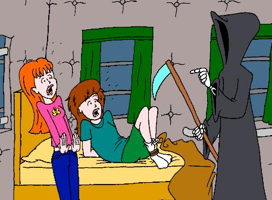

Thanks to Steve Brown for helping me with my grammar, and to John Berry for the illustration.
(Daria's room. Daria is lying on her bed reading Candide by Voltaire. Suddenly an angel who bears a striking resemblance to Artie appears in her room)
Daria: AAAAAAAAH!
Angel: Have no fear, Daria. I'm your guardian angel.
Daria: (Disbelieving) I have a guardian angel?
Angel: Yes.
Daria: Can't you use the door? You scared me half to death appearing before me like that.
Angel: (Aloof) Doors are for mortals.
Daria: (Dryly) Apparently, so are good manners.
Angel: (Snappish) Never mind that. Look, I've been sent here to stop you from committing suicide.
Daria: The book I'm reading might make you contemplate that solution. But I have no plans to kill myself.
Angel: Really? I was told you were just about to jump off a bridge.
Daria: Do you see a bridge in my room?
Angel: Isn't your name Daria *Abenddorffer*.
Daria: No, it's Morgendorffer.
Angel: Damn! Why do these things always happen to me?
Daria: You say you're my guardian angel, but you don't even know my name?
Angel: Like we guardian angels have nothing better to do than to keep tabs on you. Do you have any idea how boring you mortals can be?
Daria: Why is it that even my guardian angel has to be a jerk?
Angel: Well as long as I'm here, is there anything I can do for you?
Daria: You can start by leaving me alone. But aren't you forgetting something?
Angel: What?
Daria: This other Daria. You said she was just about to jump off a bridge. Shouldn't you try and stop her?
Angel: Damn, damn, damn!
(The angel sits down on Daria's bed, pushing Daria over in the process)
Angel: I'm too late. A fine angel I am.
Daria: How were you going to stop her?
Angel: I would've shown her how the world would look if she had never been born.
Daria: Why would that stop her from killing herself?
Angel: Beats me. I didn't ask for this job you know.
Daria: Seeing the world without me in it. That could be kind of interesting. Can you do that for me?
Angel: But you just told me you weren't going to kill yourself.
Daria: You asked if there was anything you could do for me.
(Daria's room changes. The padded walls are gone. The room is filled with toys and posters. Two boys sit on the floor playing computer games)
Angel: They can't see us. We're invisible.
Daria: Who's living in the house?
Angel: The Shermers. Here your family never moved to Lawndale. They're still living in Highland.
Daria: Can I see how Jane is doing?
(Outside the Lane house. Jane is running down the street)
Daria: She looks okay.
Angel: After taking the self esteem class 11 times, she finally got tired of it. She's now on the track team and has become very popular at school.
Daria: Don't tell me Jane's a jock.
Angel: You want me to lie?
Daria: Never mind. How's Trent doing?
(Trent's room. Trent, almost naked, is sleeping on his bed)
Daria: (Blushes) Well I guess some things never change. I think I'd
like to see how my family is now.
(Morgendorffer mansion in Highland. Helen and Jake are in the kitchen. Helen is talking on the phone. Jake is cooking dinner)
Helen: No, that's not an offer. (pause) They can do better than that. (pause) No, I don't want to hear any more excuses.
(Helen hangs up)
Helen: (Frustrated) Those people. They're really getting to me.
Jake: (Same old Jake) You know what I'm cooking for dinner? Kitchen sink stew. You know why it's called kitchen sink stew?
Helen: No, why?
Jake: Because I put everything in here but the kitchen sink.
Daria: My parents seem to be exactly the same. I thought I would at least have made some difference.
Jake: (Tastes his food) AAH!! It's burning, it's burning! (rushes over to the sink and starts drinking water)
Daria: Looks like he's trying to get the sink in as well.
Helen: John, come in here.
Daria: John? Who's John?
Angel: Here your parents have a daughter and a son.
(A boy about 12 years old enters the kitchen)
Helen: I'll be taking your father to the ER. You and Quinn can order a pizza.
John: (Panicked) No, mom, please don't leave!
Helen: Now I know you don't like to be alone. But Quinn will be here to look after you.
Jake: But, mom...
Helen: No but.
(Helen leaves with Jake. There is the sound of Quinn's voice from the living room)
Quinn: John, get me a glass of lemonade.
John: Yes, Quinn.
(Daria and the angel walk into the living room. Quinn is lying on the couch. She is reading a book about advanced calculus. Her hair is shorter. She is dressed in jeans and a green T-shirt. She has no makeup on. She is wearing glasses, and the glass over her left eye is black)
Daria: I can't believe it. Quinn is a brain. But why is she blind in her left eye?
Angel: When she was little, she stuck a pair of scissors in her eye. You weren't there to stop her.
Daria: I can't even remember doing that.
Angel: It happened when you were three years old. Quinn cried when you took the scissors from her. Your mother came in and when she saw you, she punished you for playing with scissors.
Daria: Like I said, I can't remember that, but it does sounds like something from my childhood.
Angel: So you see, your life has made a difference.
Daria: She's like me. Reading books. Not being a fashion freak.
Angel: She's not like you.
Daria: She's a lot better than my Quinn. I wish I could take her back with me.
Angel: You mortals wish for strange things.
Daria: I hope Beavis and Butthead aren't giving her a hard time.
Angel: Not anymore. Here they're dead.
Daria: How?
Angel: People think it was just a car crash. But Quinn killed them.
Daria: (Shocked) Excuse me.
Angel: She didn't like it when Beavis and Butthead called her a "pirate slut". So she stole a car, sabotaged the brakes, and gave it to them.
Daria: I can't believe she'd do something like that.
Angel: Believe. Hey, I always wanted to say that.
Daria: Has she killed anyone else?
Angel: A teacher, a classmate, and her aunt Amy. She's good at covering her tracks.
Daria: She killed Amy?
Angel: Amy caught Quinn torturing John. But before she could tell your parents, Quinn poisoned her. People think she committed suicide.
Daria: She tortures John?
Angel: See for yourself.
(John comes into the living room with a glass of lemonade, he hands it to Quinn)
Quinn: John how many ice cubes are in this glass?
John: Two.
Quinn: And I want how many ice cubes in my lemonade?
John: Three. But, Quinn, there weren't any more ice cubes.
Quinn: A shame you can't fill my glass with excuses, those you have never lacked. I hope you like to taste dad's stew.
John: No, please, I'll tell mom and dad.
Quinn: John, the only one who ever took your word over mine was aunt Amy. But perhaps you'd like to share her fate?
John: Quinn, please. I didn't mean it like that.
Quinn: I thought so, now let's go into the kitchen. I want to see you eat some of dad's stew.
Daria: I've seen enough. I'd like to go back now.
(Daria's room)
Daria: That was absolutely horrible. I never thought I could be happy about the way my Quinn is.
Angel: Why did you make that wish then?
Daria: What wish?
Angel: You wished you could take the other Quinn with you?
Daria: Don't remind me about that.
Angel: You mortals are strange. Goodbye, Daria. (he disappears)
Daria: Am I glad this is over.
(Blum-Deckler mansion, the fashion club is holding a meeting in Tiffany's room)
Tiffany: Next is a motion from Quinn. We need to find out when stripes are permissible.
Sandi: Gee, Quinn, I hope you don't think there's something wrong with *my* stripes.
Quinn: (Covers her right eye with a hand) I can see. I'm not blind on my left eye.
Tiffany: What are you talking about?
Quinn: (Walks over to the window and looks out) I'm not in Highland anymore.
Sandi: No, you moved to Lawndale, *remember*.
Stacy: Stop it, Quinn, you're scaring me.
Tiffany: Are you okay? Should one of us walk you home?
Quinn: Yes, that would be nice.
(Morgendorffer livingroom. Jake is sitting on the couch. Daria walks in and sits next to him)
Jake: Hi, kiddo.
Daria: Hi, dad. Say, have you ever had a nightmare where you wake up and you didn't know if it was just a dream because it was so real?
Jake: Shouldn't you be talking with your mother about stuff like that?
Daria: (voiceover) Somehow I feel no need to find out what he thinks I'm talking about (outloud) You're right, dad. Let's watch some TV instead.
Jake: Okay. (pause) So, Daria?
Daria: Yes?
Jake: You're not pregnant are you?
(Later. Quinn and Stacy are walking down the street)
Stacy: But this is terrible. I never knew you could get amnesia from using too much shampoo.
Quinn: Don't worry, Stacy. It said on the bottle my memory would come back after a few days.
Stacy: You seem to be taking it really well, Quinn. If it had happened to me I wouldn't know what to do.
Quinn: (voiceover) You probably never did. I hope we're at my house soon. I feel an urgent need to throw this girl in front of a moving car. (outloud) I'll be fine. I have you to tell me all I need to know.
Stacy: There. This is your house.
Quinn: Thanks, Stacy. See you tomorrow.
(Stacy leaves)
Quinn: (Voiceover) I seem to have landed in a mirror universe. The Quinn here is, judging from her friends and the, eee-yuck, clothes she wears, some totally shallow person. She has no brother, but she's living with her cousin who is a brain. One thing is for sure. Now that I have my eyesight again, I'm not going back to where I came from. I'll find out if someone here is responsible for me ending up here, and then I'll kill him or her to prevent him or her from sending me back.
(Quinn opens the front door and walks in)
Quinn: (Voiceover) My cousin is probably aunt Amy's daughter. Damn,
I forgot to ask Stacy what her name is.
(Morgendorffer livingroom. Jake and Daria are sitting on the couch. Quinn walks over to them)
Quinn: (Voiceover) Dad looks the same. That girl must be my cousin. She does look like aunt Amy. (outloud) Hi, dad, hi, cousin.
Daria: Congratulations, Quinn, just as I thought you couldn't possibly sink any lower. You manage to surprise me.
Jake: Why did you call your sister your cousin, Quinn? I was there at your births you know.
Quinn: (voiceover) She's my sister! Then why does Stacy think she's my cousin? (outloud) Sorry, sis.
Daria: So it's sis now? Don't tell me you've forgotten my name.
Quinn: Of course not. I'm just not feeling myself today.
Daria: (voiceover) No way -- it couldn't be. Please let her be the same. (outloud) You want to hear a joke?
Quinn: Sure.
Daria: Three scientists are standing outside a house -- there's a physicist, a biologist, and a mathematician. Two people enter the house but three people come out. "There's something wrong with the experiment," says the physicist. "No," says the biologist, "they multiplied." "We just send in one more person," says the mathematician, "then the house will be empty."
(Quinn laughs)
Jake: (Not getting it) Is that funny?
Quinn: Don't you get it dad? If two people go in but three come out, then there's minus one person in the house.
Jake: (Still not getting it) But maybe there was already someone in the house.
Daria: Forget it, dad. I think you have to be good at math to find it funny.
Jake: Is Quinn good at math?
Daria: Apparently she is. Now.
Jake: But that's wonderful news, kiddo. This calls for celebration. I'll get us some ice cream.
(Jake walks into the kitchen. Quinn looks at Daria. It's not a pleasant look)
Quinn: You set me up. The joke was a trap. Your Quinn wouldn't know addition from subtraction. Right, *sis*?
Daria: The name is Daria. Welcome to my nightmare.
Quinn: So are you the one who got me here?
Daria: Afraid so. It wasn't supposed to happen. It was an accident.
Quinn: (Voiceover) Wrong answer (outloud) I hope I'm not sounding ungrateful. But I really hate this place. Can you get me back to where I came from?
Daria: I'm working on it.
Quinn: (Voiceover) Very wrong answer. I have to act fast. I'll kill her tonight (outloud) So you know about my interest in math, what else do you know about me?
Daria: I have the impression you're not a very nice person.
Quinn: That'd be an understatement. Terror and mayhem isn't your idea of fun or what?
Daria: Only to a certain degree. I'd appreciate it if you kept on the strait and narrow while you're here.
Quinn: I'll make you a deal. You promise to get me back, I promise not to hurt anyone.
Daria: I'll see what I can do.
Quinn: Thanks, sis.
Daria: You are NOT my sister.
Jake: (Walks in holding a bowl of ice cream) But I'm telling you. I
was there at your births. I have pictures.
(Later that day in the Morgendorffer kitchen. The family is eating dinner)
Helen: So, girls. Has anything interesting happened today?
Daria: I wouldn't even know where to begin.
Quinn: Like anything interesting happens in your life. Nothing worth talking about anyway.
Helen: Now, Quinn. Be nice to your sister.
Quinn: Sorry, sis.
Daria: It's Daria to you.
Jake: Something happened to Quinn today.
(Quinn turns pale)
Helen: Really, what?
Jake: She's good at math.
Helen: Jake, you saw Quinn's grades yourself. Why would she suddenly be good at math?
Daria: Perhaps she's become a different person?
Quinn: I've been reading up. I found out I like math.
Daria: I hear you're good at surface integrals.
Quinn: Child's play. I mean, I'm studying them.
Helen: But that's wonderful, Quinn! Keep it up and you could be as smart as Daria. Uhm, I mean...
Quinn: That's okay mom. I know what you mean. But I know I can never
be as smart as my sister (voiceover) But soon I will be more alive than
her.
(Daria's room. Daria is standing on the floor)
Daria: Guardian angel? Could you come back here?
(Daria waits. Nothing happens)
Daria: (Voiceover) So much for that idea. Sure it was a bad idea --
problem is, it was my only idea. What's Quinn going to do when she finds
out I can't help her? Should I tell Jane? Will she even believe me?
(Quinn's room. Quinn is going through her stuff)
Quinn: (Voiceover) This is much worse than I thought. What is this place
anyway? A museum for a full size Barbie doll? I can't live like this. My
sister's death will come in handy. I'll act traumatized, and no one will
be suspicious when I suddenly change my lifestyle. I can even say I do
it to honor her memory.
(That night in Daria's room. Daria is sleeping in her bed. Quinn is sitting next to her. She blows air into Daria's face. Daria wakes up. She tries to sit up, but her hands and legs have been tied together)
Quinn: If you scream I'll gag you. But I doubt our parents can hear you through the padded walls anyway.
Daria: What're you doing?
Quinn: The question is really what am I *going* to do, but you already know the answer to that don't you?
Daria: Why are doing this?
Quinn: It's my philosophy. It says that it doesn't matter if the world is going to hell, as long as you ride first class. As far as I'm concerned other people exist only to amuse me. You, however, don't amuse me. But what's worse is that you got me here. I was blind in my left eye you know. I can't risk you sending me back.
Daria: Some philosophy. Let me guess, you got it from a fortune cookie?
Quinn: This isn't the smartest time for you to insult me you know. This is the time where you should be begging me for mercy. Or at least be telling me you have no idea how to send me back.
Daria: That isn't going to do me much good, is it?
Quinn: A stoic to the end. But you know. Even if I believed you had no way to send me back, I'd still kill you. We could have had so much fun together, but you're a total bore.
Daria: How are you going to kill me?
Quinn: I'll carry you to the bathroom, give you a warm bath, and open an artery. It'll look like suicide.
Daria: Suicide. How ironic. I wonder if my guardian angel will turn up now.
(The Grim Reaper appears)
Grim Reaper: Could you stop killing Daria, Quinn?
Quinn & Daria: AAAAAAAAAH!!

Grim Reaper: I usually don't stick my nose in other peoples business, especially not when they're killing one another and all. But I'm a great fan of Daria, and I'd hate to see her go.
(Looks at both girls, then does a double take)
Grim Reaper: (Looks at Quinn) Wait a minute. You're the wrong Quinn. You're not even supposed to exist. (snaps bony fingers) There, that's better.
Quinn: Don't be silly, Sandi, I could never think that... (looks at Daria) What're you doing at Tiffany's house, Daria? (looks around) ...But I'm in your room... how did I get here? (sees grim reaper) AAAAAAAAH! (faints)
Daria: Am I glad to see you. (pause) I can't believe I said that.
Grim Reaper: That's okay. It's the reason I look like this. Skeleton and scythe, I mean. The terror in peoples eyes when I come for them is what makes my job worthwhile.
Daria: The Grim Reaper has a sick sense of humor. (dryly) What a surprise.
Grim Reaper: (Cuts Daria's bonds with the scythe) Say, this looks like a classical example of JGA.
Daria: JGA?
Grim Reaper: Jerk Guardian Angel.
Daria: And *then* some.
Grim Reaper: I never make any mistakes. That's why I got this job.
Daria: How comforting. Uhm. Why did you save me?
Grim Reaper: I'm your greatest fan. I read all your Melody Powers stories. No Daria, no more Melody Powers.
Daria: The Grim Reaper is my fan. (pause) I can live with that. Say, now that you're here, could you do me a favor?
Grim Reaper: For you, anything.
Daria: Tell me, am I a bore?
Grim Reaper: I say you're not. Will you take the word of a psycho killer, or a jerk angel over mine?
Daria: Thank you, you're my kind of Reaper. Oh my, did I really say that?
Grim Reaper: You did.
Daria: Another thing?
Grim Reaper: Yes?
Daria: Could you make it like all this never happened?
Grim Reaper: (Ponders for a moment) I can do better than that.
(Daria's room. Daria is lying on her bed reading Candide by Voltaire. Suddenly an angel who bears a striking resemblance to Artie appears in her room)
Daria: AAAAAAAAH!
Angel: Have no fear, Daria. I'm your guardian angel.
Daria: (Disbelieving) I have a guardian angel?
(The Grim Reaper appears behind the angel)
Grim Reaper: You do. But it's not this jerk. (cuts the angel in half with its scythe)
Daria: AAAAAAAAH!!!
THE END